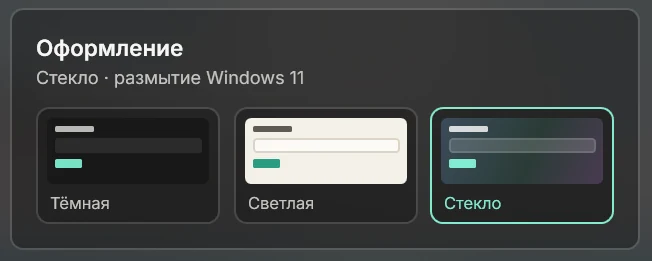
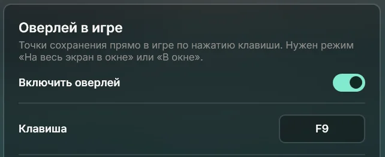
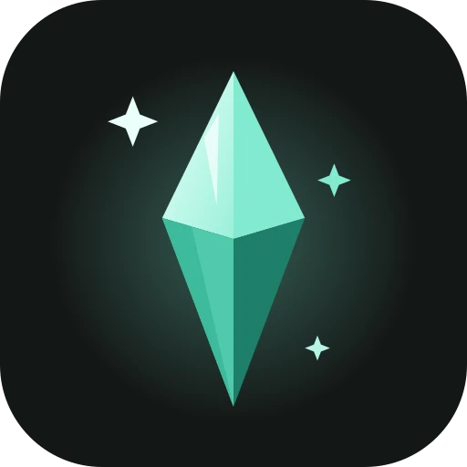

Перетащи архив — и мод уже в игре
Zip, rar или 7z: программа распакует, разложит файлы по нужным папкам и сразу покажет, что появилось. Одежда, причёски, объекты и скрипты — каждый на своей вкладке.

Ставит моды из архивов в один шаг, находит виновника вылета и откатывает сохранение прямо из игры.

Нажми F9 — слева появится панель. Сделай точку перед свадьбой, переездом или экспериментом с читами и возвращайся к ней, когда захочешь.

Игра сохранится сама, а копия ляжет отдельно — список сохранений в игре не засоряется.
Точки хранятся сколько нужно. Важные можно закрепить, остальные удалятся по твоим правилам.
Выбери точку и подтверди в окне игры. Текущая игра тоже сохранится — передумать можно в обе стороны.
Программа сама находит игру, понимает, что лежит в каждом файле, и не даёт модам ломать сохранения.
Zip, rar или 7z: программа распакует, разложит файлы по нужным папкам и сразу покажет, что появилось. Одежда, причёски, объекты и скрипты — каждый на своей вкладке.
Перед запуском программа копирует сохранения и проверяет моды. Можно запустить и без модов — чтобы понять, они ли виноваты.

После вылета Коробок читает отчёты игры, называет виновника и предлагает выключить его одним нажатием.

Стекло на Windows 11 пропускает обои рабочего стола — как у системных приложений.

Любая клавиша вместо F9, пауза в игре, пока панель открыта, и скрытие от OBS и записи экрана — для стримеров.

Живёт в программе, подсказывает и радуется, когда его гладят. Поводи по нему курсором туда-сюда.
Да. Так Windows встречает любую новую программу без платной цифровой подписи. Нажми «Подробнее», затем «Выполнить в любом случае». Исходный код открыт на GitHub — проверить его может кто угодно.
Нет, если ты сам не попросишь. Исправления только выключают моды — переносят их в папку «Mods (выключенные)». Включить обратно можно одним нажатием.
Нет. Это отдельное окно поверх игры: оно не встраивается в неё и не трогает её файлы. Нужен режим экрана «На весь экран в окне» или «В окне».
Да. Программа находит игру сама и запускает её через нужный лаунчер. Если не нашла — один раз спросит, где лежит игра.
Нет. Всё работает на твоём компьютере, без регистрации. Интернет нужен только для обновлений программы.
Одна точка весит примерно как само сохранение — обычно несколько мегабайт. Лимит по количеству, возрасту или размеру задаёшь сам в настройках.

Бесплатно и без регистрации. Программа ещё развивается и обновляется сама.
Windows 10 и 11, около 70 МБ